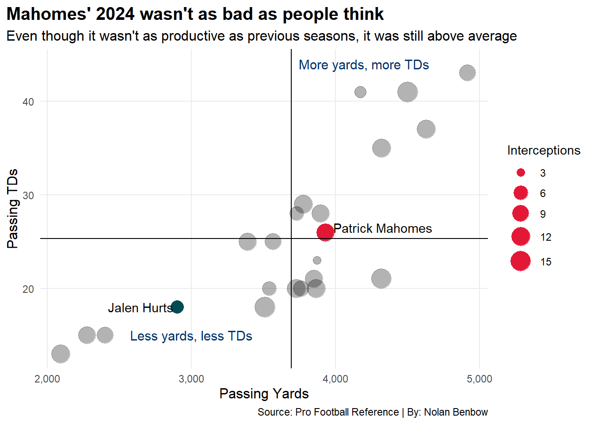
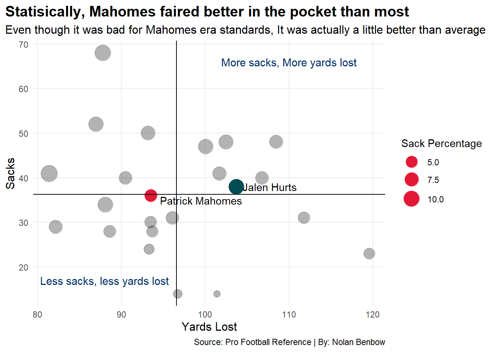
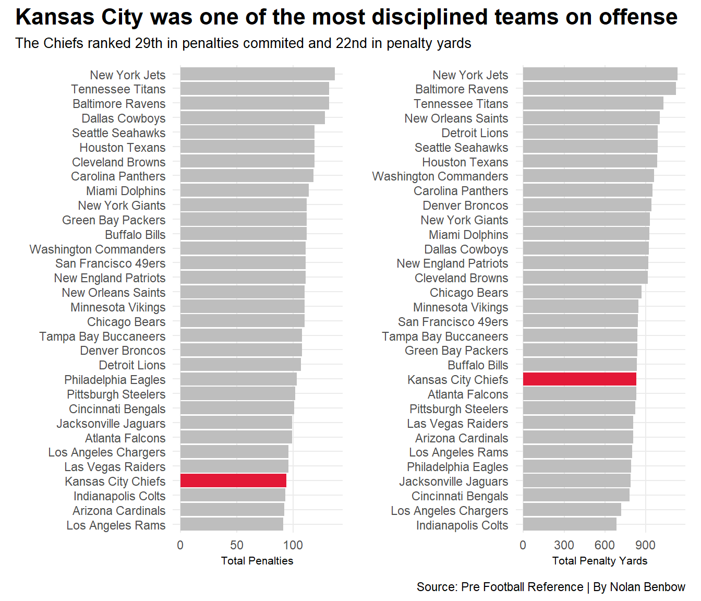

Since Patrick Mahomes took over as the starting quarterback for the Kansas City Chiefs in 2019, the offense has almost always been seen as one of the dangerous and talented groups in the entire league. However, since the hiring of Matt Nagy there has been a decline in production, especially during the 2024 season. It makes one question, what was the real problem with the Chiefs? What led to the steep decline in production as compared to years past?
Code
ggplot() +geom_point(data =currentqbs ,aes(x=PassingYds, y=TD, size=Int), alpha =0.3) +scale_size(range=c(3,8), name ="Interceptions" ) +geom_point(data = Hurts24,aes(x=PassingYds, y=TD, size=Int), color ="#004C54") +geom_text(data = Hurts24,aes(x=PassingYds-255, y=TD, label = Player)) +geom_point(data = Mahomes24,aes(x=PassingYds, y=TD, size=Int), color ="#E31837") +geom_text(data = Mahomes24,aes(x=PassingYds+400, y=TD+.5, label = Player)) +geom_vline(xintercept =3693.13) +geom_hline(yintercept =25.30435) +theme_minimal() +labs(x ="Passing Yards", y ="Passing TDs",title ="Mahomes' 2024 wasn't as bad as people think",subtitle ="Even though it wasn't as productive as previous seasons, it was still above average",caption ="Source: Pro Football Reference | By: Nolan Benbow" ) +geom_text(aes(x =4200, y =44 ),label ="More yards, more TDs",size =4, color ="#013369") +geom_text(aes(x =3000, y =15 ),label ="Less yards, less TDs",size =4, color ="#013369") +scale_x_continuous(labels = scales::comma) +scale_y_continuous(labels = scales::comma) +theme_minimal() +theme(plot.title =element_text(size =15, face ="bold"),plot.subtitle =element_text(size =12),axis.title =element_text(size =12),plot.title.position ="plot",panel.grid.minor =element_blank() )

One Look at Mahomes’ passing stats and there isn’t a clear and obvious answer. Many in the media would make it seem like Mahomes had an extremely bad year at quarterback. However when looking at where he ranks among quarterbacks who have started at least 12 games, he still is still above average. What’s more surprising is that he even out performed Super Bowl MVP Jalen Hurts this season in passing statistics.
Another argument that people bring up is that Mahomes’ offensive line was among the worst in the league.
Code
MahomesSackStats |>gt() |>cols_label(Season ="Year",Sk ="Times Sacked",SackYds ="Sack Yards",SkPct="Sack Percentage", ) |>tab_header(title ="The Chiefs offensive line was the worst in the Mahomes era",subtitle ="When comparing to previous seasons, Mahomes was sacked far more times in 2024 than any other season" ) |>tab_style(style =cell_text(color ="black", weight ="bold", align ="left"),locations =cells_title("title") ) |>tab_style(style =cell_text(color ="black", align ="left"),locations =cells_title("subtitle") ) |>tab_source_note(source_note =md("Source: Pro Football Reference | By: Nolan Benbow") ) |>tab_style(locations =cells_column_labels(columns =everything()),style =list(cell_borders(sides ="bottom", weight =px(3)),cell_text(weight ="bold", size=12) ) ) |>opt_row_striping() |>opt_table_lines("none") |>tab_style(style =list(cell_fill(color ="#E31837"),cell_text(color ="white") ),locations =cells_body(rows = Season =="2024") )
The Chiefs offensive line was the worst in the Mahomes era
When comparing to previous seasons, Mahomes was sacked far more times in 2024 than any other season
Year
Times Sacked
Sack Yards
Sack Percentage
2019
17
105.3
3.39
2020
22
108.2
3.61
2021
28
98.5
4.08
2022
26
105.2
3.86
2023
27
92.6
4.33
2024
36
93.5
5.83
Source: Pro Football Reference | By: Nolan Benbow
On the surface, it does seem like an extremely valid argument. Compared to every other season as the Chiefs starter, Mahomes took more sacks in 2024. Before the 2024 season, he had only been sacked a career high 28 times in 2021. But in 2024, he was sacked 36 times with a sack percentage of 5.83%.
On paper it looks bad but how does it stack up to the rest of the league this season?
Code
ggplot() +geom_point(data =currentqbs ,aes(x=SackYds, y=Sk, size=SkPct), alpha =0.3) +scale_size(range=c(3,8), name ="Sack Percentage" ) +geom_point(data = Hurts24,aes(x=SackYds, y=Sk, size=SkPct), color ="#004C54") +geom_text(data = Hurts24,aes(x=SackYds+4, y=Sk, label = Player)) +geom_point(data = Mahomes24,aes(x=SackYds, y=Sk, size=SkPct), color ="#E31837") +geom_text(data = Mahomes24,aes(x=SackYds+6, y=Sk-1, label = Player)) +geom_vline(xintercept =96.59565 ) +geom_hline(yintercept =36.30435 ) +theme_minimal() +labs(x ="Yards Lost", y ="Sacks",title ="Statisically, Mahomes faired better in the pocket than most",subtitle ="Even though it was bad for Mahomes era standards, It was actually a little better than average",caption ="Source: Pro Football Reference | By: Nolan Benbow" ) +geom_text(aes(x =110, y =66 ),label ="More sacks, More yards lost",size =4, color ="#013369") +geom_text(aes(x =88, y =17 ),label ="Less sacks, less yards lost",size =4, color ="#013369") +scale_x_continuous(labels = scales::comma) +scale_y_continuous(labels = scales::comma) +theme_minimal() +theme(plot.title =element_text(size =15, face ="bold"),plot.subtitle =element_text(size =12),axis.title =element_text(size =12),plot.title.position ="plot",panel.grid.minor =element_blank() )

What’s interesting is that when compared to other quarterbacks who had started at least 12 games this past season, Mahomes’ offensive line actually held up better. In fact, Mahomes was sacked less than 11 other quarterbacks and lost less yards than 12 quarterbacks. So while yes, Mahomes was sacked more times than at any other point in his career, it wasn’t as bad as some would make you think.
One category that it could be is that the offense was not disciplined when on the field. The more penalties that are called, the more likely that an offense will stall out.
Code
bar1 <-ggplot() +geom_bar(data=offensestats24, aes(reorder(Tm, Penalties), weight=Penalties), fill="grey") +geom_bar(data=ChiefsOffense24, aes(reorder(Tm, Penalties), weight=Penalties), fill="#E31837") +coord_flip() +labs(x="", y="Total Penalties" ) +theme_minimal() bar2 <-ggplot() +geom_bar(data=offensestats24, aes(reorder(Tm, PenaltyYards), weight=PenaltyYards), fill="grey") +geom_bar(data=ChiefsOffense24, aes(reorder(Tm, PenaltyYards), weight=PenaltyYards), fill="#E31837") +coord_flip()+labs(x="", y="Total Penalty Yards") +theme_minimal()bar1 + bar2 +plot_annotation(title ="Kansas City was one of the most disciplined teams on offense",subtitle ="The Chiefs ranked 29th in penalties commited and 22nd in penalty yards",caption ="Source: Pre Football Reference | By Nolan Benbow" ) &theme(plot.title =element_text(size =16, face ="bold"),axis.title =element_text(size =8), plot.subtitle =element_text(size=10),plot.title.position ="plot",panel.grid.minor =element_blank() )

But in all actuality, the Chiefs offense was one of the least penalized units in the league. While fans may cry that the referees are on Kansas City’s side, the statistics seem to potentially give that claim some credibility, at the end of the day, penalties were one area that Kansas City thrived in. They never really put themselves in poor situations because they kept committing penalties.
Lastly, how does the Chiefs rushing offense look compared to the rest of the league?
Code
rushingstats |>gt() |>cols_label(Tm ="Team",RushingAtt ="Rushing Attempts",RushingYds ="Rushing Yards",RushingTD ="Rushing Touchdowns",RushingYardsPerAttempt ="Rushing Yards Per Attempt" ) |>tab_header(title ="The Chiefs rushing production is severely lacking",subtitle ="While not the worst by any means, Kansas City's rushing attack seems to be an after thought" ) |>tab_style(style =cell_text(color ="black", weight ="bold", align ="left"),locations =cells_title("title") ) |>tab_style(style =cell_text(color ="black", align ="left"),locations =cells_title("subtitle") ) |>tab_source_note(source_note =md("Source: Pro Football Reference | By: Nolan Benbow") ) |>tab_style(locations =cells_column_labels(columns =everything()),style =list(cell_borders(sides ="bottom", weight =px(3)),cell_text(weight ="bold", size=12) ) ) |>opt_row_striping() |>opt_table_lines("none") |>tab_style(style =list(cell_fill(color ="#E31837"),cell_text(color ="white") ),locations =cells_body(rows = Tm =="Kansas City Chiefs") ) |>tab_style(style =list(cell_fill(color ="#004C54"),cell_text(color ="white") ),locations =cells_body(rows = Tm =="Philadelphia Eagles") )
The Chiefs rushing production is severely lacking
While not the worst by any means, Kansas City's rushing attack seems to be an after thought
Season
Team
Rushing Attempts
Rushing Yards
Rushing Touchdowns
Rushing Yards Per Attempt
2024
Baltimore Ravens
554
3189
21
5.8
2024
Philadelphia Eagles
621
3048
29
4.9
2024
Washington Commanders
526
2619
25
5.0
2024
Tampa Bay Buccaneers
483
2536
16
5.3
2024
Green Bay Packers
526
2496
23
4.7
2024
Detroit Lions
534
2488
29
4.7
2024
Arizona Cardinals
463
2451
18
5.3
2024
Indianapolis Colts
496
2331
20
4.7
2024
Buffalo Bills
491
2230
32
4.5
2024
Atlanta Falcons
495
2219
18
4.5
2024
Pittsburgh Steelers
533
2166
14
4.1
2024
San Francisco 49ers
457
2163
17
4.7
2024
New England Patriots
446
1969
11
4.4
2024
New Orleans Saints
444
1954
15
4.4
2024
Houston Texans
434
1909
15
4.4
2024
Denver Broncos
461
1908
12
4.1
2024
Los Angeles Chargers
463
1882
17
4.1
2024
Carolina Panthers
410
1878
18
4.6
2024
Minnesota Vikings
457
1855
9
4.1
2024
Tennessee Titans
450
1855
11
4.1
2024
Miami Dolphins
448
1795
12
4.0
2024
Kansas City Chiefs
450
1790
15
4.0
2024
New York Giants
424
1783
13
4.2
2024
Los Angeles Rams
450
1765
15
3.9
2024
Chicago Bears
431
1734
13
4.0
2024
Jacksonville Jaguars
414
1729
13
4.2
2024
Dallas Cowboys
429
1705
6
4.0
2024
Seattle Seahawks
383
1627
17
4.2
2024
Cleveland Browns
391
1608
8
4.1
2024
Cincinnati Bengals
380
1574
11
4.1
2024
New York Jets
363
1561
8
4.3
2024
Las Vegas Raiders
380
1357
10
3.6
Source: Pro Football Reference | By: Nolan Benbow
The results actually could actually lead to the answer. Kansas City Ranked 22nd in the league in rushing yards this season with only 1,790 yards. To put that in context, 12 of 14 teams who made the playoffs rank higher than KC with seven of them being in the top ten. Some of this could be attributed to the fact that Kansas City lost starting running back Isiah Pacheco early in the season with a fractured fibula. However, that still shouldn’t lead to such a lack of production. The fact of the matter is that the chiefs could never get the run game going all season long.
When one takes all of these factors into account, it would seem like there are two likely reasons to explain why the Chiefs offense struggled this year. The first argument being that It wasn’t as bad as people think, but that Chiefs fans and the NFL have been spoiled by Mahomes and the Chiefs high flying offense since 2019. However the more likely cause is the lack of a run game. Without a run game, it forces Mahomes to try and do too much, which would lead to more sacks and an overall lack of production from the offense.